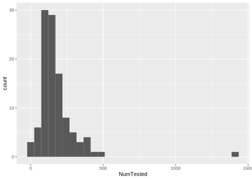
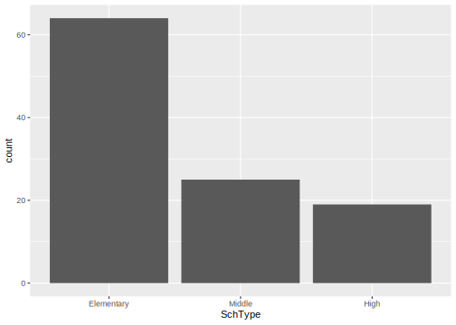
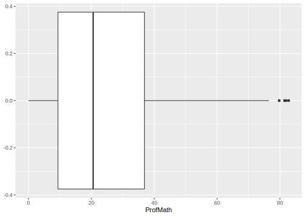

9.1 Describe one variable
Let’s start with a relatively simple example: producing a histogram of a continuous variable (here, NumTested from our dcps dataset). We do so with three basic steps.
First, we use a ggplot() command that specifies the data using the argument data and aesthetics using the aes() command. In the example below, the argument data is set equal to the object dcps which contains the data we would like to plot. The aes() argument x defines the variable from the data that should appear on the horizontal axis.
The last element is to specify the plot type. To do that, we follow the ggplot() command with plus sign (+) and add the geom_histogram() command.
# Histogram (continuous X)
ggplot(data=dcps,aes(x=NumTested)) +
geom_histogram()
By default, geom_histogram() expects the variable to be continuous and automatically breaks it into 30 equal-width bins. You can override the default binning procedure by specifying bin widths or a number of bins; more details are available in the help file for geom_histogram(). If the variable is categorical rather than continuous, you will need to include an additional argument: geom_histogram(stat="count"). Here’s an example using the categorical variable SchType.
# Histogram (categorical X)
ggplot(data=dcps,aes(x=SchType)) +
geom_histogram(stat="count")
With simple modifications to the aesthetics and the plot type, we can produce a box plot of another continuous variable ProfMath.
# Box plot
ggplot(data=dcps,aes(x=ProfMath)) +
geom_boxplot()